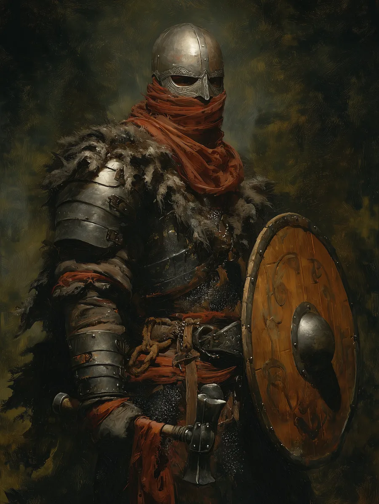
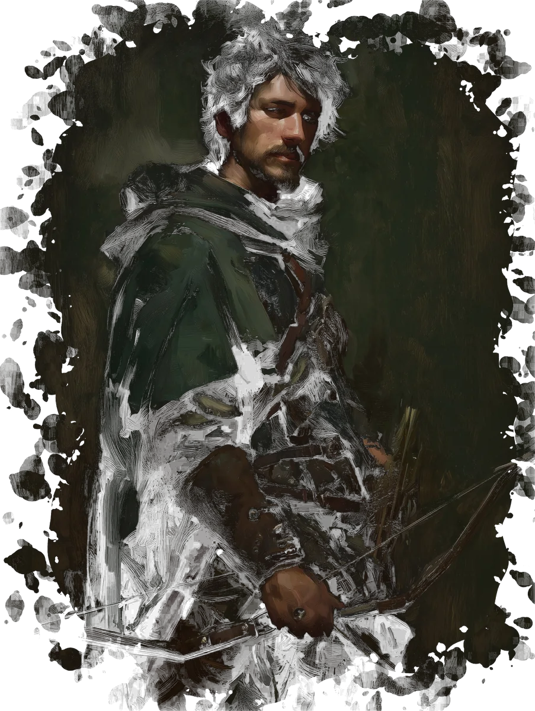
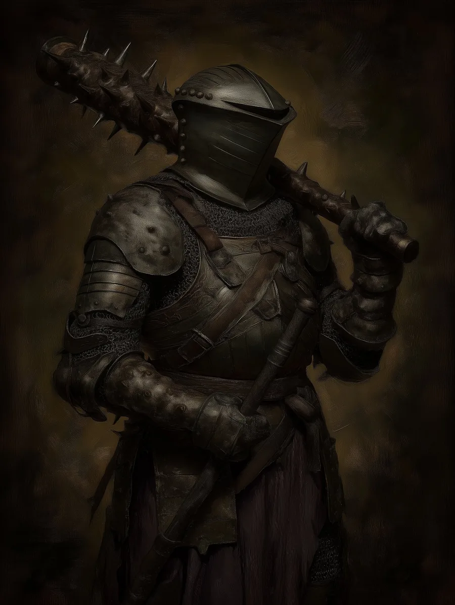

The youngest of a long line of millers — raised on stubbornness and the certainty that wrongs ought to be made right. Too big for the farm, too bull-headed for soft work. When his father turned him out at sixteen, he took a blacksmith's hammer with him, and a year later put it through a man's shoulder to stop a murder across an inn floor. His town made him their Ward.
It turned out to be less fairy tale, more blood sport. Three years of duels fought over bruised egos and bets — boys who had never held anything but a pitchfork. Then a visor came off and the face beneath was his brother's. He knelt in the dust after that, and offered his neck instead of his hammer. Lord Amar stayed the blade, and offered him a place.
He has served in Amar's house since, and by his own reckoning, been the happiest he has ever been. He still believes the stories his father told him about wards and heroes — which is not naïvety, but the thing that lets him do the work.

The son of the estate's huntsman and a maid who walked its halls. He grew up on Jannin grounds beside Naviel himself, the two as close as courtly custom would allow.
In time his father's role became his own — groundskeeper, Master of the Hunt. He has spent his whole life in the service of this house, and his whole life is what has just burned. They took the boy he grew up with. He means to get him back.
Steady, observant, slower to speak than to act. He carried Gawain home from a hunt once. That debt, like the one he owes Naviel, is not something he intends to put down.

Brandon Glursk found him on a hunt, half-dead in a forest far from here, and brought him home. What he was before that, he keeps to himself. Lord Amar saw a battered fighter with much craft to him, and offered a houseguard's place if Gawain would prove his loyalty. Eager to — shall we say — survive, and grateful for his salvation, Gawain took it.
He has been in the house a year, but his wounds have been slow to mend, and he was kept from the walls until he was fit for them. The night of the siege was the first he had felt whole enough to take post. He stood it.
Reserved, watchful — wounds that never fully closed. Whatever his past was, he left it at the gate. He has not gone back for it. But having noticed a sigil on the back of the wagon that took Naviel, and looking to pass back out through those gates again, he may now have to confront it.